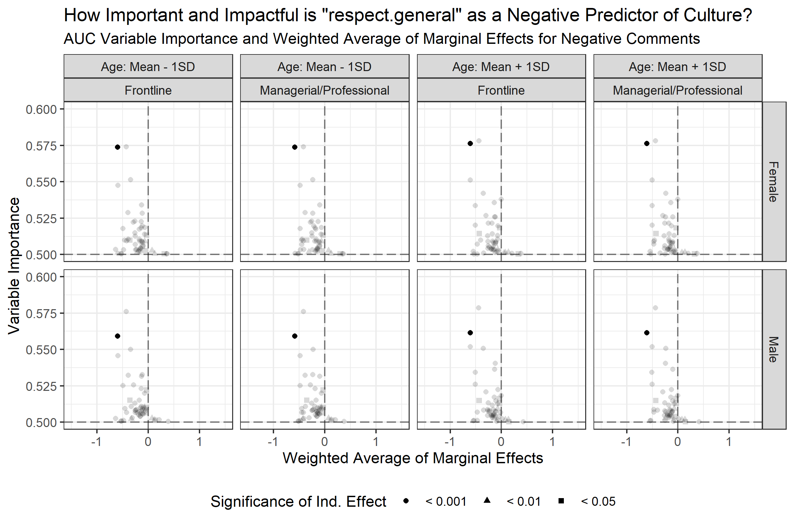

Workplace Culture
This project is an ongoing collaboration with a Colgate University professor and a MIT Sloan professor, focusing on modeling workplace culture. We are using a high-dimensional dataset consisting of workplace ratings along with demographic information and over 130 text based factors to determine what aspects of a business make up its "culture". We do this through exploratory analysis of the data, as well as interpreting marginal effects of ordered logistic regression models. The overall objective in this project is to publish several articles documenting our findings that will help inform companies, who must make decisions about which aspects of workplace culture to value and develop.
My role in this collaboration has been to determine how different subsets of people might judge culture differently. Specifically, I am analyzing the differences in values between men and women, frontline and managerial employees, and older versus younger employees. I approach this by discerning the most important and impactful predictors of culture. Important predictors are those that individually explain the most variance in culture ratings. In other words, the "most important" predictor is the one that best predicts culture on its own. On the other hand, an impactful predictor is one whose presence in a given review is likely to significantly effect the culture value rated. For instance, lgbt.friendly is not an important predictor as it is rarely cited, and thus would do a poor job of explaining most observations. But, it is important in that reviews that include it in either positive or negative contexts will be heavily positive or negative, respectively.
In more precise terms, I measure variable importance for each predictor by calculating the AUC for a univariate classification model predicting culture using solely that predictor. Variable impact, on the other hand, is calculated as the modeled change in the expected culture value rating when the feature is present and all else is equal. To discern diferences in variable impact and importance accross different cohorts, both metrics were calculated for each possible subgroup of older and younger employees, frontline versus managerial employees, and male versus female employees, resulting in 8 total combinations, as seen in the image below. This was also done for the modal male and female observation, to better isolate differences accross gender.
